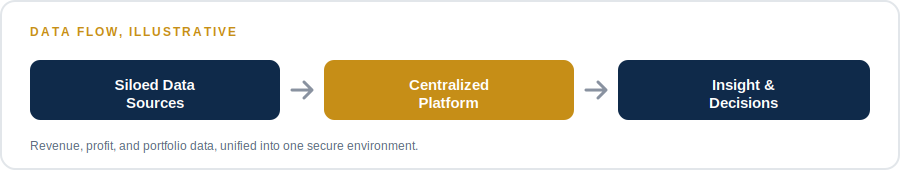
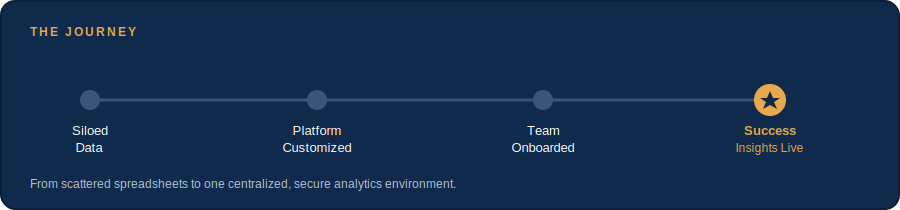

NextEmTech
Next Emerging Technology
Project Manager

Startup performance data was siloed and difficult to analyze. A centralized, secure platform was needed to collect, analyze, and act on performance metrics.
Aligned platform customization with strategic objectives, defined privacy and security requirements for sensitive data, coordinated distributed teams, and managed schedule, cost, and quality validation using a hybrid methodology.
A centralized environment for data collection and analysis, enabling more data-driven insight and improved visibility into performance.
What started as scattered spreadsheets across a portfolio of startups became one centralized, secure analytics environment. Distributed teams stopped reconciling conflicting numbers. Leadership got a single source of truth for revenue, profit, and portfolio performance — and the implementation shipped on schedule.
